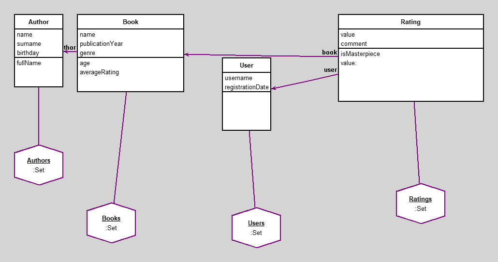

CSKD
author(s): Vladimír Martinovský
Cilem projektu je modelovat jednoduchy system pro spravu knih, autoru a uzivatelskych hodnoceni.
Modelujeme:
- Autory knih (jmeno, prijmeni, datum narozeni)
- Knihy s vazbou na autora (nazev, rok vydani, zanr)
- Uzivatele systemu (prihlas. jmeno, datum registrace)
- Hodnoceni knih uzivateli (hodnota 1-5, komentar)
Hodnota hodnoceni je automaticky orizena na rozsah 0-5 (hodnoty mimo rozsah jsou nahrazeny nejblizsim platnym cislem).
Kazda kniha ma prave jednoho autora. Hodnoceni jsou nezavisla (jeden uzivatel muze hodnotit stejnou knihu vicekrat).
Workspace
"vsechny knihy od Orwella"
Books select: [:b | b author surname = 'Orwell']
"vsechny ratings od uzivatele john_doe"
Ratings select: [:r | r user username = 'john_doe']
"knihy s rating > 4"
Books select: [:b | b averageRating > 4]
"knihy s rating > 4 serazené sestupne podle ratingu"
(Books select: [:b | b averageRating > 4]) asSortedCollection: [:a :b | a averageRating > b averageRating]
"knihy serazené sestupne podle ratingu"
Books asSortedCollection: [:a :b | a averageRating > b averageRating]
"debut autora"
(Books asSortedCollection: [:a :b | a publicationYear < b publicationYear]) detect: [:b | b author fullName = 'Dick Francis']
"poslední autorovo dílo"
(Books asSortedCollection: [:a :b | a publicationYear > b publicationYear]) detect: [:b | b author fullName = 'Dick Francis']
"vsechny knihy od Dicka Francise"
Books select: [:b | b author fullName = 'Dick Francis']
Workspace Objects
-
Authors :Set
-
Books :Set
-
Ratings :Set
-
Users :Set
Script
"============================================================================================="
"AUTORI"
"============================================================================================="
Authors := Set new.
a1 := Author new.
a1 name: 'George';
surname: 'Orwell';
birthday: '25-JUN-1903' asDate.
a2 := Author new.
a2 name: 'Joanne';
surname: 'Rowling';
birthday: '31-JUL-1965' asDate.
a3 := Author new.
a3 name: 'Dick';
surname: 'Francis';
birthday: '31-OCT-1920' asDate.
Authors add: a1; add: a2; add: a3.
"============================================================================================="
"KNIHY"
"============================================================================================="
Books := Set new.
b1 := Book new.
b1 name: '1984';
publicationYear: 1949;
genre: 'Dystopian';
author: a1.
b2 := Book new.
b2 name: 'Animal Farm';
publicationYear: 1945;
genre: 'Satire';
author: a1.
b3 := Book new.
b3 name: 'Harry Potter and the Philosopher''s Stone';
publicationYear: 1997;
genre: 'Fantasy';
author: a2.
b4 := Book new.
b4 name: 'Dead Cert';
publicationYear: 1962;
genre: 'Crime';
author: a3.
b5 := Book new.
b5 name: 'Nerve';
publicationYear: 1964;
genre: 'Thriller';
author: a3.
b6 := Book new.
b6 name: 'Odds Against';
publicationYear: 1965;
genre: 'Crime';
author: a3.
Books add: b1; add: b2; add: b3; add: b4; add: b5; add: b6.
"============================================================================================="
"UŽIVATELÉ"
"============================================================================================="
Users := Set new.
u1 := User new.
u1 username: 'john_doe';
registrationDate: '10-MAY-2023' asDate.
u2 := User new.
u2 username: 'jane_doe';
registrationDate: '18-FEB-2024' asDate.
u3 := User new.
u3 username: 'horse_fan';
registrationDate: '05-NOV-2023' asDate.
Users add: u1; add: u2; add: u3.
"============================================================================================="
"HODNOCENÍ"
"============================================================================================="
Ratings := Set new.
h1 := Rating new.
h1 book: b1;
user: u1;
value: 5;
comment: 'Amazing'.
h2 := Rating new.
h2 book: b1;
user: u2;
value: 4;
comment: 'Very good'.
h3 := Rating new.
h3 book: b3;
user: u1;
value: 5;
comment: 'Loved it'.
h4 := Rating new.
h4 book: b3;
user: u2;
value: 1;
comment: 'Horrendous'.
h5 := Rating new.
h5 book: b4;
user: u1;
value: 4;
comment: 'Classic racing thriller'.
h6 := Rating new.
h6 book: b4;
user: u3;
value: 5;
comment: 'Brilliant debut'.
h7 := Rating new.
h7 book: b2;
user: u3;
value: 5;
comment: 'Masterpiece of satire'.
Ratings add: h1; add: h2; add: h3; add: h4; add: h5; add: h6; add: h7.
Diagram

Classes
Author
|
instance variables
birthday :Date
name :String
surname :String
|
methods
birthday
birthday:
fullName
initialize
name
name:
surname
surname:
|
|
|
code of non-accessing methods:
Book
|
instance variables
author :Object
genre :String
name :String
publicationYear :Number
|
methods
age
author
author:
averageRating
genre
genre:
initialize
name
name:
publicationYear
publicationYear:
|
|
|
code of non-accessing methods:
-
age
^Date today year - publicationYear
-
averageRating
| ratings |
ratings := Rating allInstances select: [:r | r book = self].
ratings isEmpty ifTrue: [^0].
^(ratings collect: [:r | r value]) avg asFloat
-
initialize
"generated by Daskalos"
super initialize.
name := nil.
publicationYear := nil.
genre := nil.
author := nil.
User
|
instance variables
registrationDate :Date
username :String
|
methods
initialize
registrationDate
registrationDate:
username
username:
|
|
|
code of non-accessing methods:
Rating
|
instance variables
book :Object
comment :String
user :Object
value :Number
|
methods
book
book:
comment
comment:
initialize
isMasterpiece
user
user:
value
value:
|
|
|
code of non-accessing methods:
Links
Data file and
class source.
Generated by Daskalos - Object Modeling Tutor (C) 2006 V. Merunka
April 12, 2026